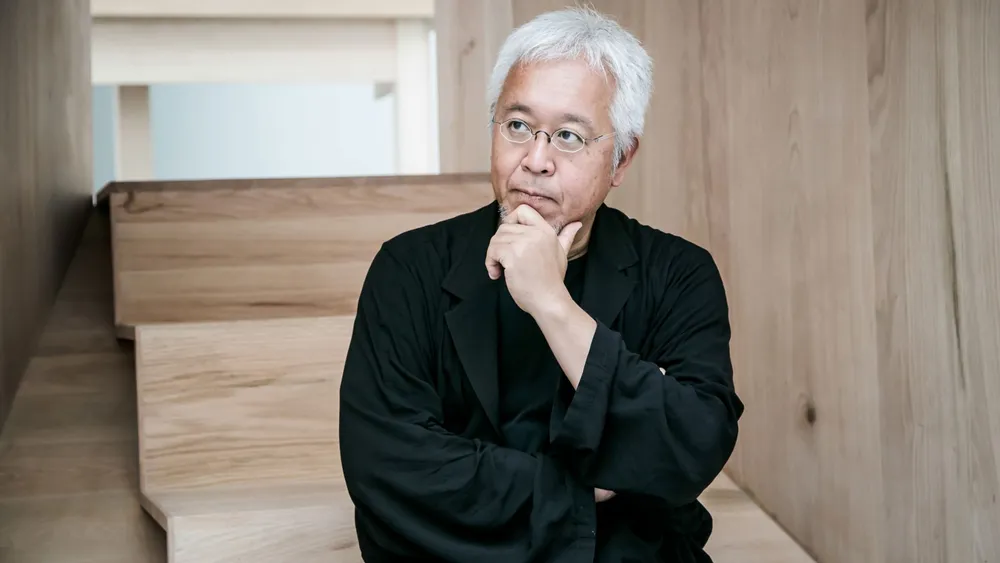

안녕하세요. 오늘은 디자인에 관한 이야기를 해보려고합니다.

아마도 "누구세요?"라는 의문만 떠오르시겠지요. 먼저 자기소개를 하겠습니다.
한국폴리텍대학교 서울정수캠퍼스 시각디자인과에 재학중인 26학번 강건호입니다.
그럼 디자인에 관한 이야기를 이어나가보도록 하겠습니다.
저는 디자인이란 사람의 마음을 움직일수있는 동력 중 하나라고 생각합니다.
오감을 만족시켜서 마음을 움직여 결국 설계한 결과를 도출해낼수있는 것, 그것이야 말로 진정한 잘 된 디자인이라고 생각합니다.

일본 디자인의 정수인 '비움'과 '절제'를 현대적인 브랜드 언어로 완성한 디자인 철학자입니다.
디자인에서 중요한 것은 자기자신이 만족하는 작업물이 아닌 사람들이 만족하는 작업물이여야한다는 것이 가장 중요하다고 생각합니다.
자기자신만이 만족하는 작업물은 순수미술과 다를게 없습니다.
상업적이여야합니다. 상업적이다는 것은 곧 다수의 사람들이 좋아하는 것입니다.
그렇다고해서 독창성이 없어야하는것은 또 아닙니다.
그렇기때문에 디자인이 필요한 것 입니다. 사람들의 마음을 움직이고 결국 설계한 결과를 도출하는것. 그것이 디자인이라고 생각합니다.